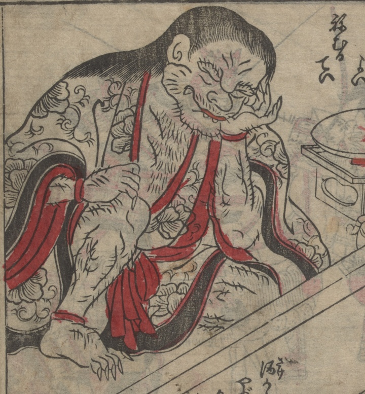

酒呑童子；シュテンドウジ，鬼；オニ

毒酒に酔い、眠っている酒呑童子。頬杖をつき、着物ははだけている。髪を肩まで垂らしたかぶろ頭で、手足に鋭い爪が生えている。
著作者：不明／出典：親書誌：U426_nichibunken_0473：[絵本千丈嶽]；エホンセンジョウガタケ／日付：2025／資源識別子：U426_nichibunken_0473_0006_0001
Copyright (c)2010- International Research Center for Japanese Studies, Kyoto, Japan. All rights reserved.